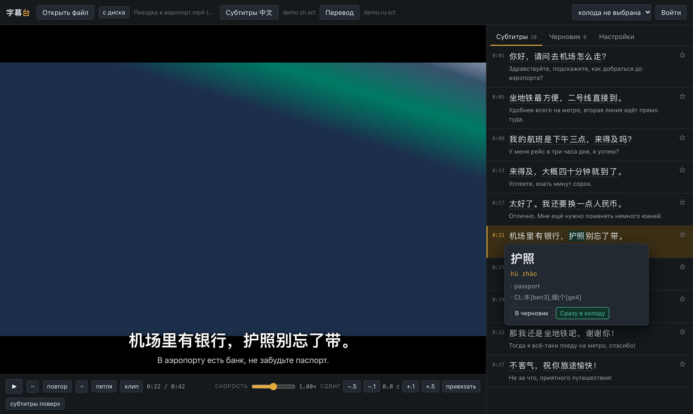
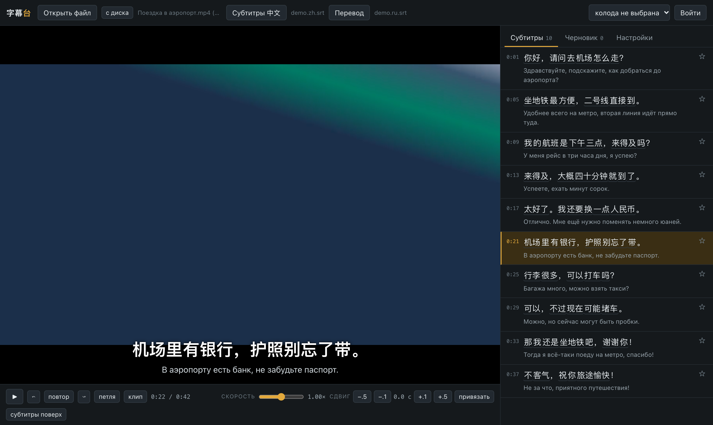
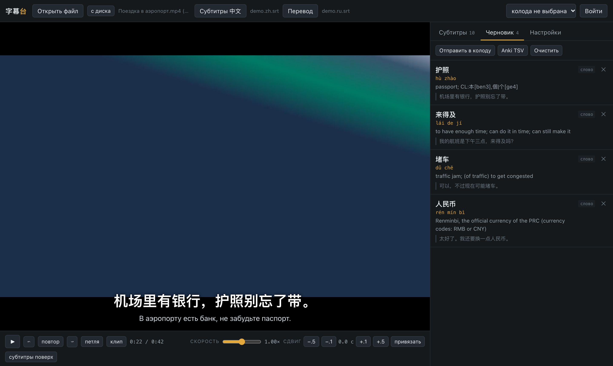

Открываешь серию и файл субтитров — каждая реплика разбита на слова. Клик по слову показывает чтение и значение, ещё один отправляет его в колоду на сайте 汉语中心 вместе с репликой, где оно встретилось. Всё работает локально: видео никуда не загружается.



В китайском нет пробелов. Реплики режет jieba, а слова из колод ученика подгружаются в её словарь — имена и термины из его материала режутся правильно.
Слова из колод приглушены, новые — светлые, а те, на которых ученик ошибается, подсвечены жёлтым. Статистика приходит с сайта.
В колоду уходит не только слово, но и реплика, где оно прозвучало. Добавление идемпотентно: дубликатов не будет.
Повторить реплику, зациклить её, замедлить до 0,5×, сдвинуть субтитры на десятые доли секунды — всё с клавиатуры.
Клавиша C вырезает реплику из видео через ffmpeg — готовый фрагмент для карточки.
Если субтитров нет, их распознаёт Whisper, а отдельный скрипт чистит типичные повторы и галлюцинации поверх музыки и тишины.
Интерфейс открывается в браузере, но рядом работает маленький сервер на стандартной библиотеке Python. Он режет реплики, запускает ffmpeg и сам ходит на сайт.
Около 2,5 тысячи строк. Плеер — спутник сайта 汉语中心: колоды, прогресс и статистика ошибок живут там.